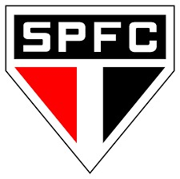
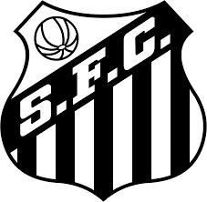
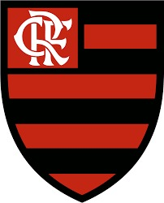
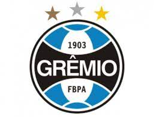
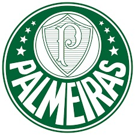
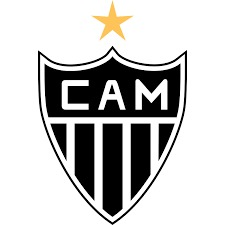
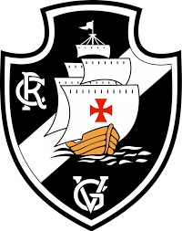

MINHA OPINIÃO ©
Escurecer Página
Clarear Página
Top 10 Maiores Times do Brasil
1º São Paulo

2º Santos

3º Flamengo

4º Corinthians
5º Grêmio

6º Internacional
7º Palmeiras

8º Cruzeiro
9º Atletico Mineiro

10º Vasco

Topo da página